六项能力，每项都写清"方法 + 产出"，不做软件名罗列。
方法：从给定资料建立人物侧写、按生活时序拆解场景
产出：需求清单与优先级
方法：按时间、动线、尺度拆解使用行为
产出：问题定位与设计条件
方法：多源信息清洗、图层叠加、空间特征归纳
产出：分析图与结构化结论
方法：把结论转成可执行方案，标注取舍与依据
产出：方案图纸、说明与建议
方法：任务拆解、进度跟踪、多轮评审迭代
产出：汇报材料与结项交付
方法：展板 / PPT / 图表 / 图像处理，建立信息层级
产出：可交付的呈现物
2023.04—2024.11｜项目负责人（主责图纸、说明与演示材料）
结果：全国适老化设计竞赛铜奖
团队项目 · 4 名成员
2025.07—2026.03｜核心成员
结果：省级大创验收通过
需补 ArcGIS 成果图与汇报材料
2026.07｜项目发起 · 内容整理 · 反馈验收
结果：GitHub Pages 上线
不写"独立开发"
主办方提供两位高龄业主的身体机能、疾病与照护资料。我把资料转成人物侧写，再按一天的活动时序拆解空间需求。
做法：资料解析 → 人物侧写 → 活动时序拆解 → 痛点清单
结论：问题集中在出入口、卫生间、厨房与卧室的动线与尺度
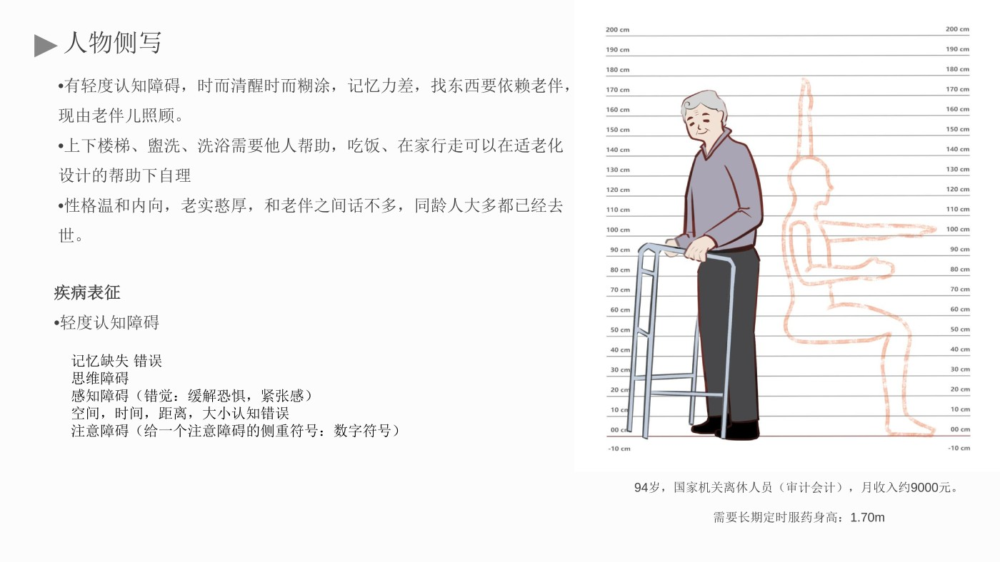
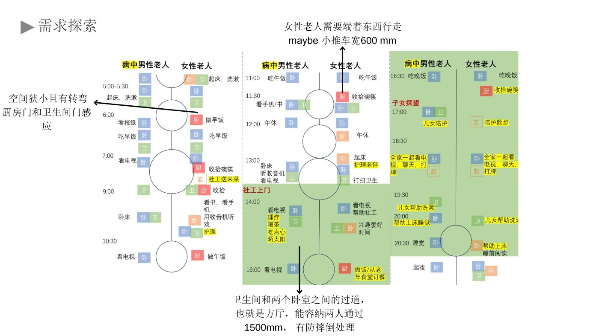
结合人体尺度、轮椅通行与照护场景，把"使用不便"翻译成可执行的设计条件。
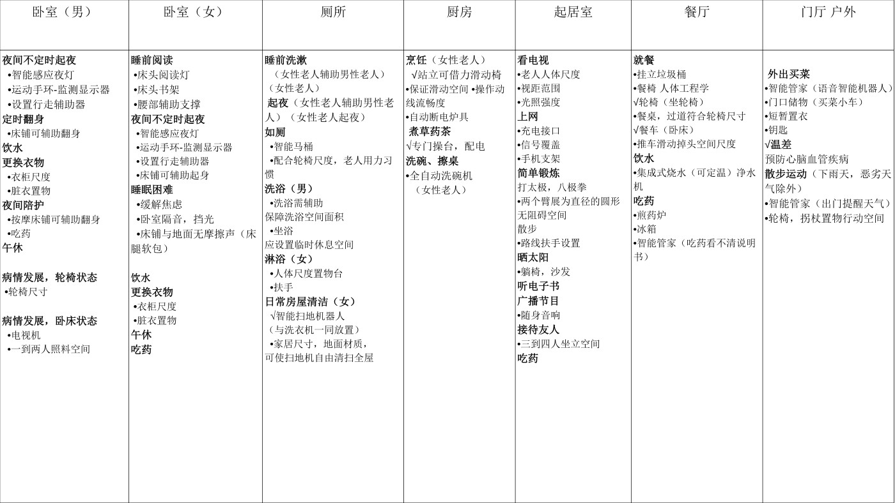
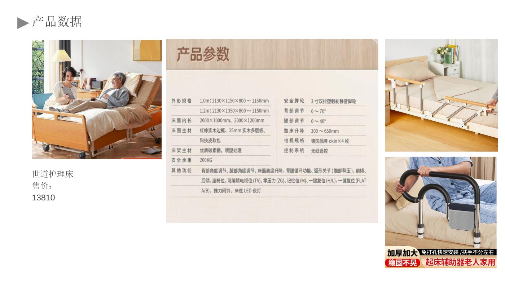
需求汇总：把分散的场景问题收敛成少数核心需求
任务与概念：确立设计任务与策略主线
取舍：在有限面积里优先保障高频与高风险场景
本人负责：图纸、设计说明与演示材料（团队协同推进）
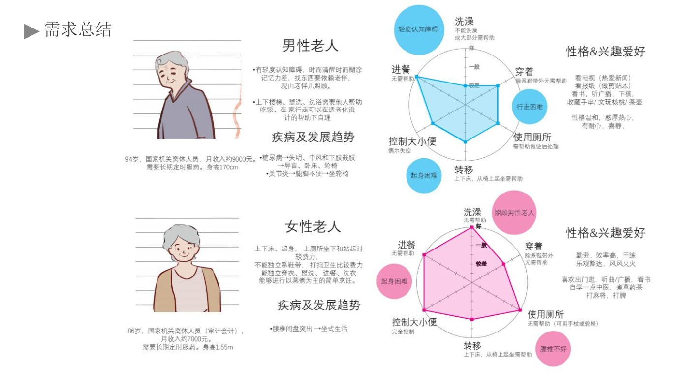
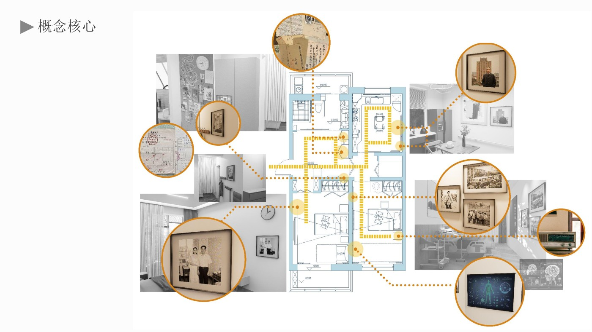
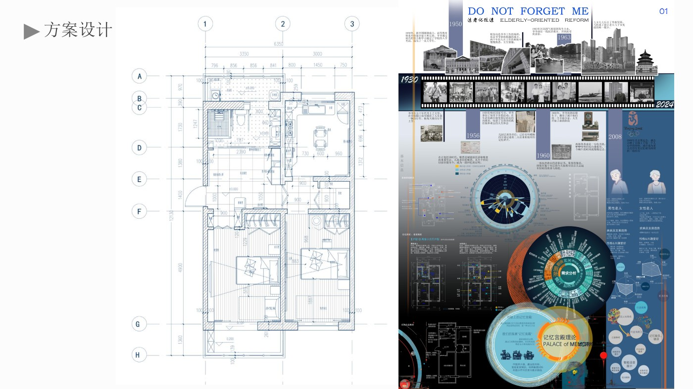
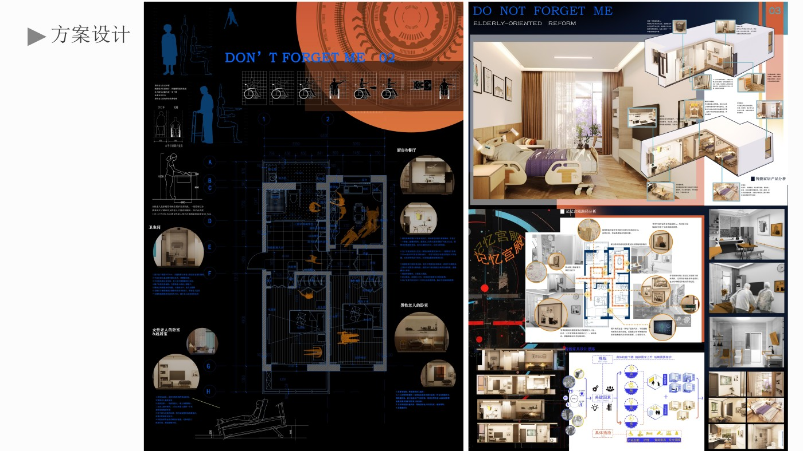
四宫格：每格标注"目的 — 处理 — 效果"，不放没有说明的装饰图。
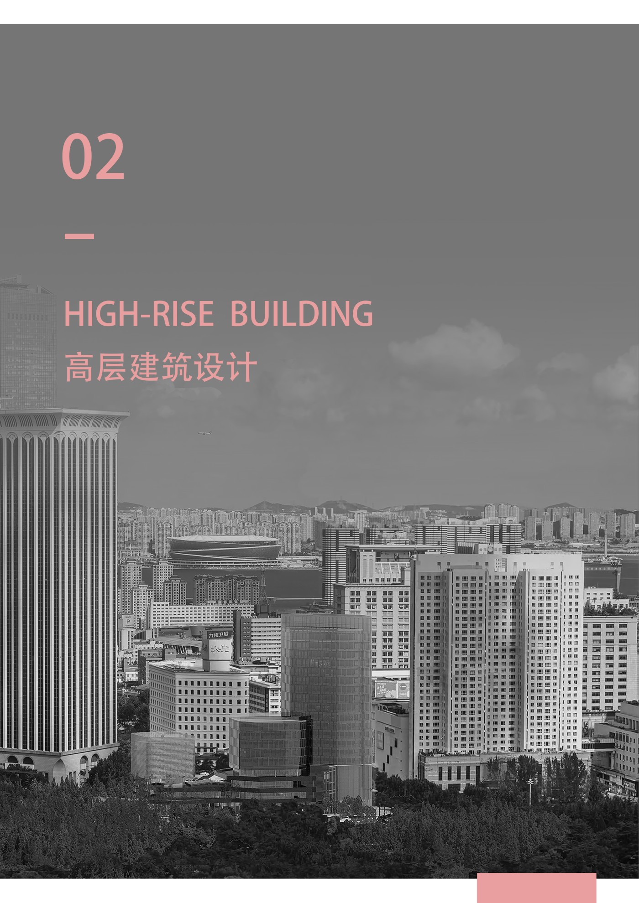
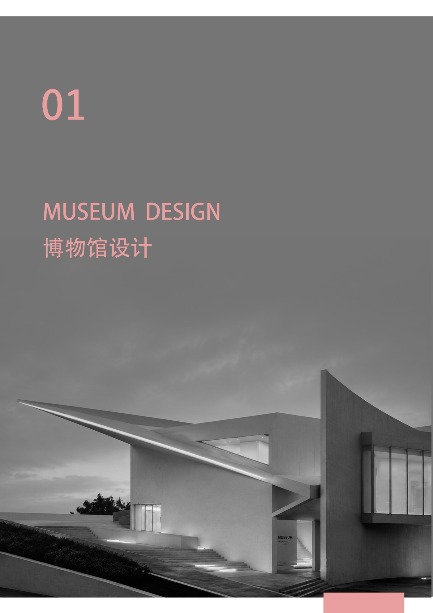
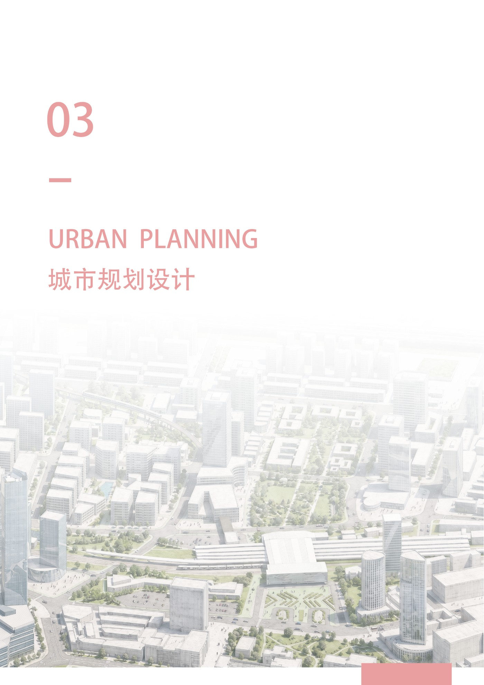
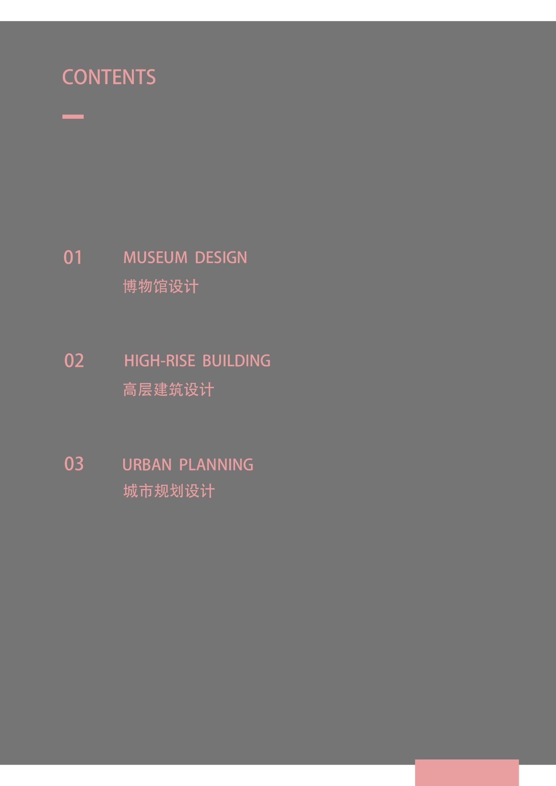
意向方向：品牌 / 消费者洞察 / 内容运营 / 商业零售运营 / 产品策划